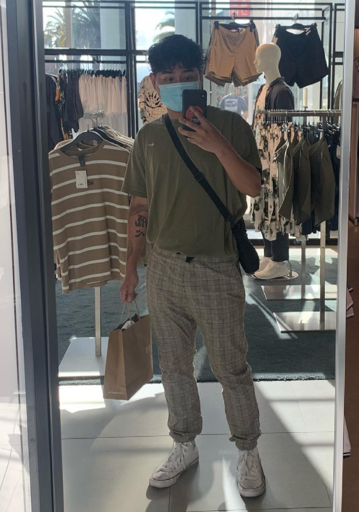

Angelo Punzalan
Data Science, 4th Year
I'm a 4th year Data Science student who loves listening (and recently dancing) to kpop, playing volleyball, and video games. My favorite animal is
the Capybara. I currently have 13 tattoos and I plan to get more as time goes on. My favorite animes are Haikyuu, Demon Slayer, and World Trigger.
Favorite places to eat in Berkeley
- Kimchi Garden
- Amausaan Matcha
- Seoul Hotdog
- Sweetheart Cafe
- Noody
Picture of me

Link to a favorite site
"What Did Hubble See on Your Birthday?
Responses to Article
- 1. I learned that each part of an app / website is there for a reason. It prompts the user to (unconsciously) think about their next move
and helps guide them throughout the whole app or website.
- 2. I really enjoyed the gifs put together that help add in a visual and guide our vision. It really breaks down the design and
made me think about why each section was designed in that way.
- 3. I liked the quote "You develop your design eye as if you were the designer of a product." This really gets me into the mentality of
a designer and helps me figure out the motives for the designs.
- 4. 10. This article was a good read and its length made it easy to digest. Despite its short length though, it really got its message through
and actually encourages people to keep doing what they learned in the article.